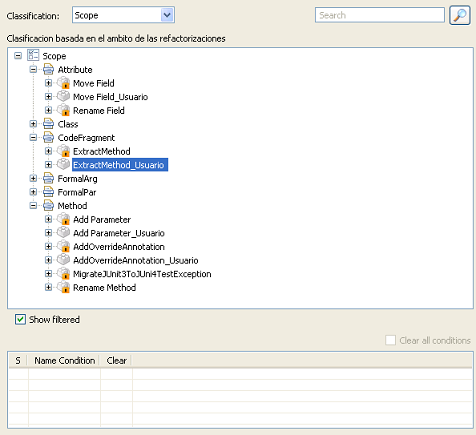

Panel de clasificacionesPanel de clasificaciones
Panel de clasificacionesPanel de clasificaciones
El Classification Panel se sitúa en la zona izquierda de la vista y esta destinado a la visualización del catálogo de refactorizaciones. En él se da la posibilidad de visualizar las refactorizaciones clasificadas según las categorías de la clasificación que previamente se haya seleccionado. Además se podrán aplicar filtros al catálogo de refactorizaciones con el objetivo de mostrar exclusivamente aquellas refactorizaciones que cumplan con ciertos criterios que se establezcan.
En la siguiente ilustración se puede apreciar el panel:

En la parte superior consta de un combo en el que se puede seleccionar la clasificación por la que se organizarán las categorías. Inmediatamente debajo de ese combo se encuentran la descripción de la clasificación seleccionada y el árbol con todas las refactorizaciones organizadas según las categorías de la clasificación y según los filtros aplicados.
Debajo del árbol aparecen la lista de filtros aplicados con la opción de desactivar y eliminar por cada uno de ellos y encima de esta lista un checkbox que permite ocultar o mostrar las refactorizaciones filtradas.
En la esquina superior se muestra el campo de filtrado y el botón para aplicar un filtro. Para más información sobre los filtros estos son explicados en la sección de Búsquedas con filtros.